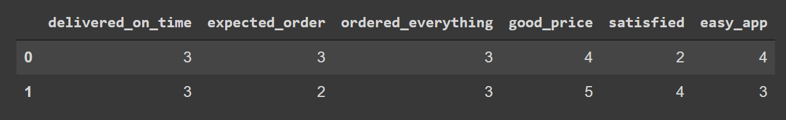

!أبسط مشروع تعلم آلة يمكن أن تبدأ به

العديد من الناس يريدون البدء في تعلم الآلة ولكن أحيانا يقعون في بيانات أو مشاريع صعبة قليلا لمن يريد أن يبدأ بالأمر، لذلك اليوم سنتعلم تنفيذ مشروع بسيط ولكن يمكن استخدام جميع ما سنتعلمه اليوم والبناء عليه لاحقا لبناء نماذج أكثر تعقيدا.
تنويه : هذا المشروع يتطلب معرفة متوسطة بلغة بايثون. سنتعلم في هذا المشروع:
1- كيف نقرأ البيانات من ملف (csv)
2- كيف نستكشف البيانات
3- طريقة بناء نموذج أولي
قبل أن نبدأ في أي مشروع لابد أن نعرف طبيعة البيانات وما هو المطلوب أو ماهي المشكلة حتى نصل إلى ما نريد. البيانات التي سنتعامل معها اليوم هي بيانات تم أخذها من شركة تبيع منتجات ما، قاموا بعمل استبيان لجمع آراء العملاء بخدمتهم مثل سهولة استخدام التطبيق، وتم سؤال كل عميل 7 أسئلة، 6 منهم كانت عن آداء الشركة، أما السابع فهو عما إذا كان هذا العميل راضي عن الخدمة بشكل عام أم لا كما هو موضح في الجدول التالي:
| المعنى | العمود |
|---|---|
| إذا كان العميل سعيد أم لا | y |
| رأي العميل في التوصيل في الوقت المحدد | x1 |
| هل وصل الطلب المتوقع | x2 |
| هل طلب العميل كل شيء يريده | x3 |
| السعر كان مناسبا بالنسبة للطلب | x4 |
| مدى رضى العميل عن التوصيل | x5 |
| تطبيق الجوال جعل عملية التسوق أسهل | x6 |
المطلوب هنا هو التنبؤ بما إذا كان العميل سيكون راضي أو سعيد أم لا (العمود y)إذا تم إعطاء النموذج إجابات الستة أسئلة، إذا ببساطة سنبني نموذج يستقبل إجابات الستة أسئلة (تسمى بالخصائص) وهو يتنبأ بالإجابة عن السؤال السابع – عما إذا كان العميل راضي أم لا- (يسمى بالهدف).
لذلك دعونا نبدأ، بسم الله..
1 - قراءة البيانات:
يمكن قراءة البيانات من أنواع ملفات مختلفة يإستخدام مكتبة (بانداز – Pandas)، ويمكننا معرفة نوع الملف من امتداده أو ما ينتهي به إسم الملف مثل: file_1.csv هذا الملف ينتهي اسمه ب csv مما يعني أنه ملف من النوع csv أو إذا كان إسم الملف file_2.xlsx فيعني أن ملفنا هو ملف أكسل وهكذا.
أول شيء سنفعله هو إستدعاء مكتبة pandas بإستخدام الأمر التالي:
import pandas as pd
حسناً، ماذا يعني هذا الكود؟ كلمة import تعني إستدعاء لأي أمر يأتي بعدها، أما pandas فإنه إسم المكتبة الذي نريده وأخير as pd كلمة as تعني مثل وأخيرا pd هو إسم أو إختصار صغير يمكننا أن ننادي به المكتبة عوضا عن إسمها الطويل. هذه الممارسة منتشرة كثيرا بين علماء البيانات وعادة يستخدمون نفس الأسماء القصيرة لجميع المكتبات ولكنها ليست ثابتة، بمعني يمكننا أن نستخدم :
import pandas as p
المهم أن نستعمل الإختصار نفسه متى ما أردنا إستدعاء المكتبة.
مكتبة pandas توفر لنا طريقة لقراءة الملفات وهي من خلال إستعمال:
pd.read_csv(PATH)
pd.read_csv('data/ACME-HappinessSurvey2020.csv')
مابداخل القوسين او ال path هو المكان الذي تتواجد فيه بياناتنا أو مكان الملف الذي نريد قراءته. في حالتنا هذه، بجانب هذا الملف أو ال notebook الذي أعمل عليه لدي مجلد سميته data وبداخل هذا المجلد يتواجد الملف الذي أريد قراءته. ربما يسأل البعض لما كل هذه المشقة وقراءة ملف داخل مجلد والخ؟ السبب بسيط وهو الترتيب. عادة، يفضل أن تفصل الأشياء عن بعضها بطريقة منظمة، مثلا إذا كنت تحتاج في مشروعك إلى قراءة بعض الملفات وأيضا بعض الصور ولنقل أنك تريد أيضا حفظ نتيجة النموذج الذي بنيته، يمكنك أن تنشئ ثلاثة مجلدات بالأسماء التالية: data, images, model .
ماذا إذا أردت قراءة ملف مكانه يتواجد بجانب ملف ال notebook الذي تعمل عليه؟ ببساطة يمكنك فعل الآتي:
pd.read_csv('ACME-HappinessSurvey2020.csv')
# ACME-HappinessSurvey2020 هو إسم الملف الذي أريد قراءته
أما في حالة واجهت بعض المشاكل في التعرف على مكان الملف الذي تريد قراءته، يمكنك إستعمال المسار الكلي كما في الصورة التالية:
وسيقرأ الملف كالتالي:
df = pd.read_csv('C:\Users\user\Desktop\Apziva\project 1\data\ACME-HappinessSurvey2020.csv')
حسنا، ماذا عن كلمة df؟ ماهي إلا مجرد إسم أعطيناه للبيانات حتى نستدعيها لاحقا وهو إختصار لكلمة dataframe ويمكن إستعمال أي إسم أخر مثل data أو ما بدا لك. المهم أن تكون التسميات واضحة وبعيدة عن تسميتها بشيء مثل ss.
2- إستكشاف البيانات:
سنعمل على إستكشاف بسيط جدا وذلك لأن البيانات بسيطة بحد ذاتها. في خليه منفصلة قمت بكتابة الأمر التالي:
df.head()
بكل بساطةdf وهو الإسم الذي أعطيته للبيانات و head
تعني إطبع لي رأس البيانات أو مقدمتها. في حال تم كتابتها بالشكل السابق فإنه سيتم طباعة أول خمسة صفوف من البيانات. أما في حالة تم إضافة رقم ولنفرض 2 بين القوسين فإنه سيتم طباعة أول صفين فقط كما نرى هنا.
df.head(2)
دائما ما يتم إستعمال هذا الأمر لإلقاء نظرة على البيانات بشكل عام، فنرى أن لدينا عمود يدعى y وستة أعمدة أخرى. هذه واحدة من أسوأ الطرق بوجهه نظري لتخزين البيانات حيث أنه يجب تعريف كل عمود ومعناه بملف منفصل، لذلك سنغير هذه الأسامي لاحقا.
بإستخدام الأمر التالي يمكننا أن نعرف شكل البيانات، مرة أخرى df ماهي إلا بياناتنا أو ملفنا و shape تعني شكل. هذا الأمر أعطانا (126،7) وهذا يعني أن لدينا 126 صف و 7 أعمدة وهذا منطقي حيث أنه من خلال الأمر السابق وهو df.head رأينا أن هنالك عامود y و 6 أعمدة ل x.
df.shape()
أحيانا أو في كثير من الأوقات بالأصح عند جمع البيانات يتم فقد جزء من البيانات أو خطأ في الإدخال، مثلا في حالة مراجعتك لطبيب وقام بإدخال بياناتك، أحيانا تجد أن الطبيب لايدخل جنس المريض مثلا أو يضع أي رمز عدا عن ذكر أو أنثى وهذا قد يعود إلى عدم إهتمام المنظومة بجودة البيانات أو إلى الضغط الذي يتعرض له الأطباء. لذلك لابد أن نرى إذا ماكان هناك أي بيانات مفقودة أم لا وأيضا ماهو نوع البيانات في كل عمود، لنرى إذا كانت منطقية أم لا، ولا تستهين بهذه النقطة، فمستقبلا سترى العجب العجاب من الأخطاء التي يمكن أن تكون في البيانات.
الأمر التالي سيقوم أولا برؤية إذا كان هنالك أي بيانات مفقودة في الملف أم لا وإذا كانت هنالك خلايا مفقودة أولا تحتوي على بيانات يقوم بعدها أو إحصائها لك.
df.isna().sum()
isna هي إختصار لـ is null مما يعني هل هنالك أي قيمة مفقودة وإذا كانت الإجابة بنعم فقم بعدها من خلال sum وهي بمعني عدها.
في حالتنا هذه قام بإعطائنا صفر لجميع الأعمدة وهذا يعني أنه لاتوجد لدينا أي قيم مفقودة.
والآن دعونا نتأكد عما إذا كان نوع البيانات في كل عمود منطقي أم لا من خلال الأمر التالي:
df.info()
Info هي إختصار لكلمة information بمعني معلومات، ويقوم هذا الأمر بطباعة معلومات الملف كما نرى.
في الحقيقة يمكن إستخدام هذا الأمر بديلا عن الأمر السابق لأنه يطبع قيمة القيم في كل عمود، فيمكننا من رؤية إذا كان هنالك أي قيم مفقودة أم لا. أيضا يمكننا رؤية أن نوع البيانات لجميع القيم هو int64 وكلمة int هي إختصار لكلمة integer وتعني عدد صحيح أما عن الرقم 64 فيعني 64 bit وهذا أمر آخر خارج موضوع اليوم ولكن المهم ان نوع البيانات هو رقم صحيح، حسنا هل من المنطقي أن يكون نوع البيانات هو عدد صحيح في هذه البيانات؟ الإجابة هي نعم بالتأكيد، لأن جميع الإجابات عن جميع الأسئلة هي عبارة عم 1 و0 أو أرقام من 1 إلى 5، وهذا يعني إذا كان العميل موافق فنضع 1 أما إذا كان غير موافق فنضع 0. مثلا إذا سألوا عميل هل وصلك المنتج الذي طلبته بالضبط؟ إذا قال نعم فإنهم يضعون في الإستبيان 1 أما إذا قال لا فإنهم يضعون 0. أو إذا كانوا يريدون تدوين تقييم العميل من 5 أي أن 5 تعني أنه راضي تماما و1 تعني أنه غير راضي تماما فيمكن إستعمال الأرقام أيضا بهذه الطريقة. وهذه ماهي إلا إحدى طرق تخزين البيانات، فيمكنهم وضع نعم ولا أيضا. المهم أن الصفر والواحد وبقية الأرقام هي أعداد صحيحة، إذا بياناتنا سليمة.
ولايكون الوضع دائما هكذا، في بعض الأحيان ستجد أرقاما مخزنة مع نصوص في نفس الخلية أو عمود تاريخ ولكن نوعه هو نص فيجب أن تصلح هذا الشيء.
بعد أن تأكدنا من أن كل شيء سليم، سنصلح مشكلة الأسماء المزعجة من خلال الأمر التالي:
df.rename(columns={"Y": "happy_customer", "X1": "delivered_on_time", "X2": "expected_order"
, "X3": "ordered_everything", "X4": "good_price", "X5": "satisfied"
, "X6": " easy_app"}, inplace = True)
rename يعني أعد التسمية، وفي الداخل تم وضع إسم كل عامود (الإسم الأصلي بالملف) ومقابله التسمية الجديدة. تم أخذ هذه الأسامي أو معاني الأعمدة من المعلومات التي وفرتها الشركة وتم توضيحها بجدول سابق.
واحدة من أهم طرق إستكشاف البيانات هي الرسم، فيمكن توضيح الكثير من خلالها. عن طريق الكود التالي سأرسم أعمدة تمثل عدد الحالات في كل عمود، بالإضافة إلى طباعة الأعداد بالترتيب ونسبة الآراء الإيجابية والسلبية. sns ماهو إلا اختصار لمكتبة seaborn.
# لكل عمود موجود في البيانات
for col in df.columns:
# اذا كان العمود ليس العمود الهدف
if col != 'happy_customer':
# أرسمه
sns.countplot(x=col, data=df, palette='bwr', edgecolor='black', linewidth=2)
# ضع له عنوان يساوي إسم العمود
plt.title(col)
# أطبع فواصل
print('--'*38)
# إطبع القيم بالترتيب
print(f'{col} values:\nFrequency:{sorted(df[col].value_counts())}')
# اذا كان التقييم أكبر من 3 فإنه تقييم إيجابي
positive = df.loc[(df[col] > 3)].shape[0]
# جد لي نسبة التقييم الإيجابي
positive_percentage = positive / df.shape[0]
# إذا كان التقييم أقل من 3 فهو تقييم سلبي
negative = df.loc[(df[col] < 3)].shape[0]
# جد لي قيمة التقييم السلبي
negative_percentage = negative / df.shape[0]
# إطبع لي كلا من نسبة التقييم السلبي والإيجابي
print('positive rating of' , col,':', positive_percentage * 100, '%')
print('Negative rating of' , col,':' , negative_percentage * 100, '%')
# إطبع لي فواصل
print('--'*38)
# ثسم خلفية الرسم إلى مربعات
plt.grid(alpha=0.4)
# أظهر الشكل
plt.show()
أيضا من خلال الكود التالي سأرسم كل عمود بالنسبة لقيم العمود المستهدف وهو ال y سابقا أو happy_customer حاليا.
# لكل عمود في البيانات
for column in df.columns:
# happy_customer أرسم لي قيم العمود بالنسبة للعمود الهدف وهو
ax = sns.countplot(df.happy_customer, hue=df[column], palette='RdBu', edgecolor='black', linewidth=2)
# ضع عنوان للشكل يساوي إسم العمود
plt.title(column)
# ضع لي مفاتيح حتى أعرف هل هو صفر أم واحد وهي المربع بأعلى اليسار
plt.legend(loc=2)
# ضع لي فواصل
print('--'*38)
# اطبع لي كل عمود وعدد الناس الذين صوتوا لكل تقييم
print('{}:\n{}'.format(column, df[column].value_counts()))
print('--'*38)
plt.show()
أعتقد أن هذا التحليل كافي لذلك سننتقل مباشرة لبناء نموذج أولي..
3- بناء نموذج أولي:
ماذا يعني هذا الأمر؟ حتى الآن لاتوجد طريقة مضمونة لمعرفة أن هذه البيانات تعطي أفضل النتائج مع خوارزمية بعينها، وإنما الواقع فهو أن عالم البيانات يقوم بتجريب نموذج أولي ومن ثم يحاول أن يبني نموذج أو يستعمل خوارزمية أكثر تعقيدا أو مختلفة للحصول على درجة أعلى خصوصا في حالة العمل في بيئة تتطلب تقارير بشكل دوري فيجب أن يكون هنالك إجابة سريعة أولية. إذا السؤال ماذا أستخدم حتى أبني نموذج أولي؟ أي خوارزمية؟ لايوجد شيء بعينه ولكن يمكن إستخدام أبسط وأسرع شيء؟ في حالتنا هذه أو مانحاول حله يقع تحت مسمى classification problem أو مشكلة تصنيف؟ ماذا نقصد بالتصنيف؟ أسأل نفسك سؤال واحد، هل العمود الهدف هو رقم مثل أسعارالمنازل؟ أو سرعة السيارة؟ إذا كان نعم فمشكلتك إنحدار أما إذا كانت لا، فالسؤال التالي هل العمود الهدف هو تصنيفات؟ بمعني يمكن الإجابة عنه بنعم أو لا أو يمكن الإجابة عنه بمريض وسليم أو حتى تصنيفات متعددة مثل تعليم إبتدائي أو تعليم متوسط أو تعليم ثانوي. إذا كان العمود الهدف هو تصنيفات فعندها يمكننا القول أننا نتعامل مع classification problem لأنها تختلف قليلا مع مشاكل الإنحدار.
حسنا لنعود إلى بياناتنا، العمود الهدف هو happy_customer ويمكن الإجابة عن هذا العمود بنعم أو واحد ويعني أن العميل راضي أو سعيد أو يمكن الإجابة عنه بصفر أو لا وهذا يعني أن العميل غير راضي، إذا من الواضح أن مشكلتنا هي تصنيف.
لأن البيانات حجمها صغير جدا وأيضا للحفاظ على الوقت سأستعمل مكتبة تدعى lazy predictions وما تفعله هذه المكتبة هو أنها ستقوم بإختبار أغلب الخوارزميات المعروفة وتعطينا الدرجة.
ولكن قبلها لابد من عمل أمرين مهمين وهما ضبط البذور وتقسيم البيانات.
أولا دعونا نناقش ضبط البذور، لنفترض أن لدينا 100 صف وقررت أن أقسم البيانات إلى قسمين، لنفترض خمسين بالمئة لكل جزء. السؤال يكون كيف سيتم تقسيم هذه البيانات؟ هل سيتم تقسيمها بشكل عشوائي في كل مرة أقوم بتقسيم البيانات؟ أم هل ستصل إلى الصف خمسين وتضعه في الجزء الأول والمتبقي في الجزء الثاني؟ الأفضل أن نقسمها بشكل عشوائي ولكن عشوائية ثابتة، أعلم أن جملة عشوائية ثابتة تظهر كأنها جملة متناقضة ولكن لنفترض وجود كلا من الصفوف التالية في الجزء الأول والتي تم إختيارها بشكل عشوائي ( 2 و 86 و 40) أما في الجزء الثاني فتم إختيار الصفوف التالية أيضا بشكل عشوائي (8 و 55 و 71)، حسنا هنا تحقق الجزء العشوائي وهو إختيار قيم عشوائية في كل جزء، لكن أين العشوائية المنتظمة أو الثابتة؟ العشوائية الثابتة تكون في اختيار نفس القيم العشوائية مرة أخرى نفسها، بمعنى لو أعدت تقسيم البيانات بشكل عشوائي مرة أخرى مع نفس عدد البذور سنحصل على نفس الأرقام العشوائية دائما. فمهما أعدنا تشغيل الخلية فإن الجزء الأول دائما سيحتوي على 2 و 86 و 40. لماذا كل هذا؟ في حالة ضبط البذور على عدد معين فإنه مهما قمنا بتشغيل النموذج فسيعطينا نفس النتائج وهذا مهم جدا خصوصا في حالة أننا أردنا تغير شيء بداخل النموذج ونريد أن نعرف ماهي نتيجة هذا التغيير على الدرجة. لكن في حالة عدم ضبطه فإن النموذج سيعطينا قيم مختلفة في كل مرة نقم فيها بتشغيل النموذج لأن البيانات إختلفت وجربه بنفسك لتتأكد. حسنا، كيف نضبط تلك البذور؟ يمكننا إستعمال الأمر التالي:
random_seed = 0
ماذا عن الصفر؟ هل هو ثابت؟ الإجابة هي لا، أختر أي رقم يروق لك.
حسنا ماذا عن الجزء الثاني وهو تقسيم البيانات؟ ولماذا نقسم البيانات بالأصل؟ دائما ما يتم تقسيم البيانات إلى قسمين أو أكثر ولكن هنا سنعتمد على قسمين فقط وهما train/test ماذا يعني هذا؟ سنقسم البيانات إلى بيانات تدريب وبيانات إختبار. أي أننا سندرب النموذج على بيانات التدريب فقط ومن ثم سنقوم بإختباره على بيانات لم يراها من قبل ونرى إذا كان النموذج جيد أم لا.
من خلال الأمر التالي سنقوم بتقسيم البيانات إلى خصائص (X) وهدف(y):
X = df.drop("happy_customer", axis=1) # الخصائص هي جميع الأعمدة ماعدا العمود الهدف
y = df["happy_customer"] # العمود الهدف
X: يحمل جميع الأعمدة والصفوف ماعدا العمود الهدف كما في الصورة التالية: 
y: يحمل فقط قيم العمود الهدف كما نرى في الصورة التالية:
والآن يمكننا تقسيمها إلى تدريب وإختبار من خلال الأمر التالي:
# قسم البيانات إلى إختبار وتدريب
X_train, X_test, y_train, y_test = train_test_split(X, y,test_size=.2,random_state = random_seed)
نلاحظ أن البذور تم تحديدها وضبطها من خلال random_state و test_size تم اختيارها على 0.2 وهذا يعني أن حجم بيانات الإختبار ستكون 20% من البيانات بالتالي بيانات التدريب ستكون 80% من حجم البيانات.
X_train.shape(2)
y_train[:2]

X_test.shape(2)
y_test[:2]
print('X_train shape is: ', X_train.shape)
print('y_train shape is: ', y_train.shape)
print('X_test shape is: ', X_test.shape)
print('y_test shape is: ', y_test.shape)
مالذي حدث بالضبط؟ أولا تم تقسيم البيانات إلى خصائص (X) وهدف(y) ثم تم تقسيم كلا من الخصائص والهدف إلى تدريب(X_train, y_train) 80% والبقية إختبار وهي 20 %(X_test, y_test). يجب ملاحظة أن عدد صفوف X_train يجب أن يتساوى مع y_train وأن عدد صفوف X_test يتساوى مع y_test.
والآن دعونا نستخدم مكتبة lazy prediction حتى تقوم بإختبار عدة نماذج وتعطيني الأفضل بينهم كما في الكود التالي:
clf = LazyClassifier(verbose=0,ignore_warnings=True, custom_metric=None) # عرف المكتبة تحت المتغير clf
models,predictions = clf.fit(X_train, X_test, y_train, y_test) # ضع بياناتك بداخل المكتبة لكي تعطيك نتيجة البيانات على عدة نماذج
models
يبدو أن النموذج perceptron أعطانا أفضل نتيجة، يمكننا الآن تدريبه وإختباره كما في الكود التالي:
model = Perceptron() # الخطوة الأولى هي تعريف النموذج
model.fit(X_train, y_train) # الخطوة الثانية هي إدخال بيانات التدريب داخل النموذج
النتيجة التي حصلت عليها هي 50%، وبالطبع يمكن تطوير هذه الدرجة إلى أعلى من هذا ولكن كيف تم حساب هذه الدرجة؟ قام النموذج بالتدرب على X_train وهي جميع الخصائص ماعدا الهدف وأيضا تدرب على y_train وهو الهدف وفي هذه المرحلة يحاول النموذج أن يتعلم أو يجد روابط بين الخصائص والهدف، على سبيل المثال لو كان جميع الناس الذين قالوا أن طلبهم لم يصلهم كما هو كانوا عملاء غير راضين في مرحلة التدريب فهنا يتعلم النموذج أنه في حالة وجد في مرحلة الإختبارأن هنالك عميل قال بأنه وصله طلب مختلف سيتنبأ بأنه عميل غير سعيد وهكذا. وهذه هي فائدة تقسيم البيانات إلى تدريب وإختبار، فيمكننا معرفة مدى قوة النموذج الذي قمنا ببنائه عن طريقها.
حسناً، إذا قمت بتدريب المودل على X_train و y_train أين سأستعمل بيانات الإختبار لأرى بماذا يتنبأ النموذج؟ يمكننا أن نكتب الكود التالي لمعرفة تنبؤات النموذج:
model.predict(X_test) # الخطوة الثالثة هي جعل النموذج يتنبأ ب نتيجة العمود الهدف
y_test # الخطوة الرابعة هي مقارنة القيم الحقيقية مع القيم التي تنبأ بها المودل
model.score(X_test, y_test) # حساب الـ accuracy
يمكننا تطويره من خلال grid search or random search وهذه ماهي إلا تكنيكات لضبط المتغيرات المختلفة التي يستقبلها كل نموذج ومعرفة الأفضل بينها، ويمكنني شرح كيفية ضبط هذه المتغيرات في مقال آخر.
حسنا، باقي شيء أخير أود مناقشته، ألا وهو إختيار المعيار المناسب لكل بيانات أو لكل مشكلة مختلفة. عادة ما يستخدم الناس وخصوصا المبتدئين مايعرف بالدقة أو accuracy وهي مجرد قسمة عدد التصنيفات الصحيحة على العدد الكلي. على سبيل المثال لو أن هنالك 10 صفوف، ولدينا تصنيفان وهما عميل سعيد وعميل غير سعيد. وقام النموذج بتصنيف خمسة منهم تصنيفا صحيحا فإن الدقة هي 5 قسمة 10 تعطينا 50% وهي دقة هذا النموذج. ولكن توجد لدينا معايير أخرى مثل المساحة تحت المنحى وغيرها. حاليا ليس الهدف هو شرح أي الأفضل منها لهذه المشكلة ولكن المهم أن نعرف أن الدقة ليست دائما خيارا صحيحا ولا بد لنا من البحث عن أفضل معيار أو معيار إختبار مناسب لنوع المشكلة التي نريد حلها.
بالطبع إذا أردت رؤية جميع ما تم تطبيقه سابقا بالإضافة إلى البيانات يمكنك رؤيته من خلال حسابي في github .